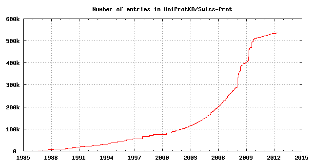
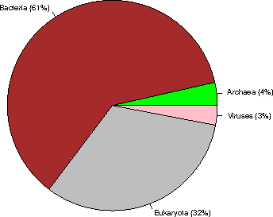
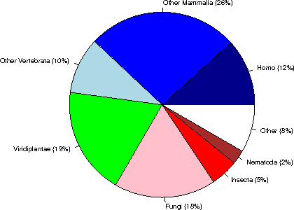
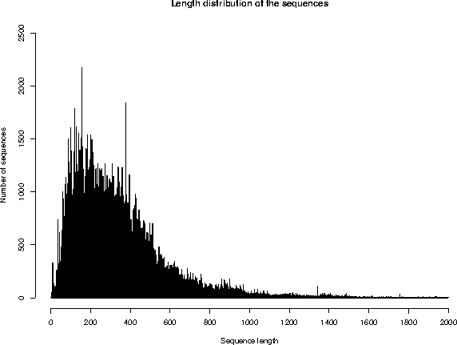
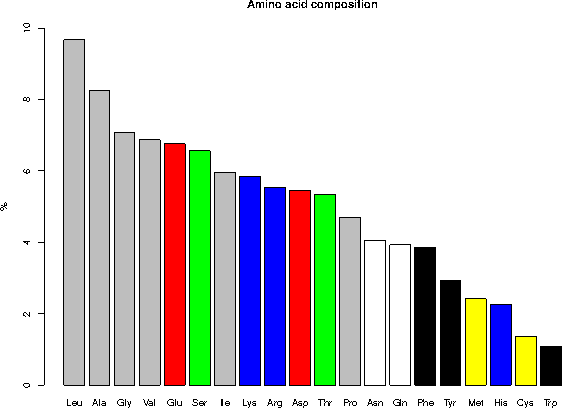

UniProtKB/Swiss-Prot protein knowledgebase release 2012_06 statistics
1. INTRODUCTION
Release 2012_06 of 13-Jun-12 of UniProtKB/Swiss-Prot contains 536489 sequence entries,
comprising 190389898 amino acids abstracted from 210586 references.
478 sequences have been added since release 2012_05, the sequence data of
82 existing entries has been updated and the annotations of
77483 entries have been revised.
Number of fragments: 9016
Number of additional sequences produced by alternative splicing, initiation or promoter usage, or ribosomal frameshifting: 32270
Protein existence (PE): entries %
1: Evidence at protein level 75050 14%
2: Evidence at transcript level 67986 12.7%
3: Inferred from homology 377161 70.3%
4: Predicted 14394 2.7%
5: Uncertain 1898 0.4%
The growth of the database is summarized below.

2. TAXONOMIC ORIGIN
Total number of species represented in this release of UniProtKB/Swiss-Prot: 12832
The first twenty species represent 111953 sequences: 20.9 % of the total
number of entries.
2.1 Table of the frequency of occurrence of species
Species represented 1x: 5401
2x: 1871
3x: 972
4x: 630
5x: 461
6x: 375
7x: 279
8x: 223
9x: 196
10x: 117
11- 20x: 660
21- 50x: 395
51-100x: 212
>100x: 1040
2.2 Table of the most represented species
------ --------- --------------------------------------------
Number Frequency Species
------ --------- --------------------------------------------
1 20237 Homo sapiens (Human)
2 16537 Mus musculus (Mouse)
3 11247 Arabidopsis thaliana (Mouse-ear cress)
4 7766 Rattus norvegicus (Rat)
5 6619 Saccharomyces cerevisiae (strain ATCC 204508 / S288c) (Baker's yeast)
6 5938 Bos taurus (Bovine)
7 5089 Schizosaccharomyces pombe (strain 972 / ATCC 24843) (Fission yeast)
8 4431 Escherichia coli (strain K12)
9 4188 Bacillus subtilis (strain 168)
10 4126 Dictyostelium discoideum (Slime mold)
11 3356 Caenorhabditis elegans
12 3349 Xenopus laevis (African clawed frog)
13 3156 Drosophila melanogaster (Fruit fly)
14 2891 Oryza sativa subsp. japonica (Rice)
15 2830 Danio rerio (Zebrafish) (Brachydanio rerio)
16 2248 Gallus gallus (Chicken)
17 2218 Pongo abelii (Sumatran orangutan)
18 2011 Escherichia coli O157:H7
19 1929 Mycobacterium tuberculosis
20 1787 Methanocaldococcus jannaschii
21 1769 Salmonella typhimurium (strain LT2 / SGSC1412 / ATCC 700720)
22 1707 Haemophilus influenzae (strain ATCC 51907 / DSM 11121 / KW20 / Rd)
23 1678 Shigella flexneri
24 1674 Escherichia coli O6:H1 (strain CFT073 / ATCC 700928 / UPEC)
25 1660 Xenopus tropicalis (Western clawed frog) (Silurana tropicalis)
26 1407 Sus scrofa (Pig)
27 1346 Salmonella typhi
28 1244 Mycobacterium bovis
29 1226 Pseudomonas aeruginosa (strain ATCC 15692 / PAO1 / 1C / PRS 101 / LMG 12228)
30 1170 Macaca fascicularis (Crab-eating macaque) (Cynomolgus monkey)
31 1032 Synechocystis sp. (strain PCC 6803 / Kazusa)
32 1018 Yersinia pestis
33 1010 Archaeoglobus fulgidus
34 948 Vibrio cholerae serotype O1 (strain ATCC 39315 / El Tor Inaba N16961)
35 930 Salmonella paratyphi A (strain ATCC 9150 / SARB42)
36 926 Ashbya gossypii (strain ATCC 10895 / CBS 109.51 / FGSC 9923 / NRRL Y-1056)
37 925 Staphylococcus aureus (strain N315)
38 923 Staphylococcus aureus (strain Mu50 / ATCC 700699)
39 909 Acanthamoeba polyphaga mimivirus (APMV)
40 903 Kluyveromyces lactis
41 899 Staphylococcus aureus (strain COL)
42 895 Staphylococcus aureus (strain MW2)
43 889 Staphylococcus aureus (strain MSSA476)
44 888 Escherichia coli O6:K15:H31 (strain 536 / UPEC)
45 888 Staphylococcus aureus (strain MRSA252)
46 886 Oryctolagus cuniculus (Rabbit)
47 882 Salmonella choleraesuis (strain SC-B67)
48 878 Shigella sonnei (strain Ss046)
49 869 Rhizobium meliloti (strain 1021) (Ensifer meliloti) (Sinorhizobium meliloti)
50 864 Yersinia pseudotuberculosis
51 861 Candida glabrata
52 841 Escherichia coli O9:H4 (strain HS)
53 834 Escherichia coli O139:H28 (strain E24377A / ETEC)
54 832 Neurospora crassa
55 829 Shigella boydii serotype 4 (strain Sb227)
56 825 Escherichia coli (strain UTI89 / UPEC)
57 821 Shigella dysenteriae serotype 1 (strain Sd197)
58 819 Escherichia coli (strain ATCC 8739 / DSM 1576 / Crooks)
59 802 Canis familiaris (Dog) (Canis lupus familiaris)
60 795 Vibrio parahaemolyticus
61 791 Escherichia coli (strain SMS-3-5 / SECEC)
62 783 Erwinia carotovora subsp. atroseptica (strain SCRI 1043 / ATCC BAA-672)
63 780 Aquifex aeolicus (strain VF5)
64 775 Pasteurella multocida (strain Pm70)
65 771 Escherichia coli (strain K12 / DH10B)
66 771 Emericella nidulans
67 765 Escherichia coli O127:H6 (strain E2348/69 / EPEC)
68 765 Escherichia coli (strain K12 / MC4100 / BW2952)
69 764 Escherichia coli O17:K52:H18 (strain UMN026 / ExPEC)
70 762 Escherichia coli (strain 55989 / EAEC)
71 761 Escherichia coli O8 (strain IAI1)
72 760 Shigella flexneri serotype 5b (strain 8401)
73 759 Staphylococcus epidermidis (strain ATCC 35984 / RP62A)
74 758 Staphylococcus epidermidis (strain ATCC 12228)
75 756 Escherichia coli (strain SE11)
76 756 Escherichia coli O45:K1 (strain S88 / ExPEC)
77 753 Escherichia coli O7:K1 (strain IAI39 / ExPEC)
78 752 Streptomyces coelicolor (strain ATCC BAA-471 / A3(2) / M145)
79 748 Escherichia coli O157:H7 (strain EC4115 / EHEC)
80 744 Photorhabdus luminescens subsp. laumondii (strain TT01)
81 738 Staphylococcus aureus (strain NCTC 8325)
82 735 Yersinia enterocolitica serotype O:8 / biotype 1B (strain 8081)
83 734 Bacillus anthracis
84 734 Bacillus halodurans
85 733 Vibrio vulnificus
86 731 Escherichia coli O81 (strain ED1a)
87 721 Salmonella enteritidis PT4 (strain P125109)
88 717 Vibrio vulnificus (strain YJ016)
89 716 Salmonella paratyphi B (strain ATCC BAA-1250 / SPB7)
90 715 Yersinia pestis bv. Antiqua (strain Nepal516)
91 714 Salmonella paratyphi A (strain AKU_12601)
92 713 Enterobacter sp. (strain 638)
93 713 Salmonella agona (strain SL483)
94 713 Escherichia coli O1:K1 / APEC
95 713 Salmonella newport (strain SL254)
96 713 Yersinia pseudotuberculosis serotype O:1b (strain IP 31758)
97 712 Klebsiella pneumoniae subsp. pneumoniae (strain ATCC 700721 / MGH 78578)
98 712 Salmonella schwarzengrund (strain CVM19633)
99 711 Yersinia pestis bv. Antiqua (strain Antiqua)
100 710 Salmonella heidelberg (strain SL476)
101 702 Salmonella dublin (strain CT_02021853)
102 698 Shigella boydii serotype 18 (strain CDC 3083-94 / BS512)
103 696 Candida albicans (strain SC5314 / ATCC MYA-2876) (Yeast)
104 696 Klebsiella pneumoniae (strain 342)
105 695 Escherichia fergusonii (strain ATCC 35469 / DSM 13698 / CDC 0568-73)
106 692 Zea mays (Maize)
107 688 Pan troglodytes (Chimpanzee)
108 688 Nostoc sp. (strain PCC 7120 / UTEX 2576)
109 687 Mycoplasma pneumoniae (strain ATCC 29342 / M129)
110 683 Salmonella gallinarum (strain 287/91 / NCTC 13346)
111 678 Citrobacter koseri (strain ATCC BAA-895 / CDC 4225-83 / SGSC4696)
112 676 Pseudomonas putida (strain KT2440)
113 675 Pseudomonas syringae pv. tomato (strain DC3000)
114 670 Serratia proteamaculans (strain 568)
115 668 Mycobacterium leprae
116 667 Yersinia pestis (strain Pestoides F)
117 666 Staphylococcus aureus (strain USA300)
118 658 Rhizobium sp. (strain NGR234)
119 654 Bradyrhizobium japonicum (strain USDA 110)
120 653 Debaryomyces hansenii
121 652 Bacillus cereus (strain ATCC 14579 / DSM 31)
122 649 Neosartorya fumigata (strain ATCC MYA-4609 / Af293 / CBS 101355 / FGSC A1100)
123 645 Escherichia coli
124 643 Staphylococcus aureus (strain bovine RF122 / ET3-1)
125 642 Salmonella arizonae (strain ATCC BAA-731 / CDC346-86 / RSK2980)
126 642 Yarrowia lipolytica (strain CLIB 122 / E 150) (Yeast) (Candida lipolytica)
127 638 Yersinia pseudotuberculosis serotype O:3 (strain YPIII)
128 634 Shewanella oneidensis (strain MR-1)
129 634 Yersinia pseudotuberculosis serotype IB (strain PB1/+)
130 632 Agrobacterium tumefaciens (strain C58 / ATCC 33970)
131 622 Cronobacter sakazakii (strain ATCC BAA-894) (Enterobacter sakazakii)
132 615 Treponema pallidum (strain Nichols)
133 613 Methanothermobacter thermautotrophicus
134 612 Staphylococcus haemolyticus (strain JCSC1435)
135 606 Rhizobium loti (strain MAFF303099) (Mesorhizobium loti)
136 602 Xanthomonas campestris pv. campestris (strain ATCC 33913 / NCPPB 528 / LMG 568)
137 602 Photobacterium profundum (Photobacterium sp. (strain SS9))
138 602 Staphylococcus saprophyticus subsp. saprophyticus
139 601 Salmonella paratyphi C (strain RKS4594)
140 601 Ralstonia solanacearum (strain GMI1000) (Pseudomonas solanacearum)
141 601 Listeria monocytogenes serovar 1/2a (strain ATCC BAA-679 / EGD-e)
142 601 Oryza sativa subsp. indica (Rice)
143 600 Yersinia pestis bv. Antiqua (strain Angola)
144 590 Bacillus cereus (strain ATCC 10987)
145 590 Listeria innocua serovar 6a (strain CLIP 11262)
146 589 Pectobacterium carotovorum subsp. carotovorum (strain PC1)
147 586 Rickettsia prowazekii (strain Madrid E)
148 576 Neisseria meningitidis serogroup B (strain MC58)
149 576 Brucella suis biovar 1 (strain 1330)
150 574 Helicobacter pylori (strain ATCC 700392 / 26695) (Campylobacter pylori)
151 572 Brucella melitensis biotype 1 (strain 16M / ATCC 23456 / NCTC 10094)
152 572 Buchnera aphidicola subsp. Acyrthosiphon pisum (strain APS)
153 568 Caenorhabditis briggsae
154 567 Bacillus thuringiensis subsp. konkukian (strain 97-27)
155 566 Pseudomonas syringae pv. syringae (strain B728a)
156 565 Helicobacter pylori (strain J99) (Campylobacter pylori J99)
157 564 Vibrio fischeri (strain ATCC 700601 / ES114)
158 564 Caulobacter crescentus (strain ATCC 19089 / CB15)
159 564 Pseudomonas aeruginosa (strain UCBPP-PA14)
160 562 Bacillus licheniformis (strain DSM 13 / ATCC 14580)
161 562 Buchnera aphidicola subsp. Schizaphis graminum (strain Sg)
162 561 Bacillus cereus (strain ZK / E33L)
163 556 Xanthomonas axonopodis pv. citri (strain 306)
164 556 Clostridium acetobutylicum
165 552 Oceanobacillus iheyensis (strain DSM 14371 / JCM 11309 / KCTC 3954 / HTE831)
166 552 Neisseria meningitidis serogroup A / serotype 4A (strain Z2491)
167 552 Pseudomonas fluorescens (strain Pf0-1)
168 546 Pseudomonas fluorescens (strain Pf-5 / ATCC BAA-477)
169 545 Pseudomonas syringae pv. phaseolicola (strain 1448A / Race 6)
170 533 Lactococcus lactis subsp. lactis (strain IL1403) (Streptococcus lactis)
171 531 Erwinia tasmaniensis (strain DSM 17950 / Et1/99)
172 529 Sodalis glossinidius (strain morsitans)
173 529 Listeria monocytogenes serotype 4b (strain F2365)
174 527 Streptococcus pneumoniae
175 526 Thermotoga maritima (strain ATCC 43589 / MSB8 / DSM 3109 / JCM 10099)
176 522 Bordetella bronchiseptica (strain ATCC BAA-588 / NCTC 13252 / RB50)
177 522 Xylella fastidiosa
178 515 Bordetella pertussis (strain Tohama I / ATCC BAA-589 / NCTC 13251)
179 514 Chromobacterium violaceum
180 512 Xylella fastidiosa (strain Temecula1 / ATCC 700964)
181 511 Pseudomonas aeruginosa (strain PA7)
182 511 Vibrio cholerae serotype O1 (strain ATCC 39541 / Ogawa 395 / O395)
183 510 Haemophilus ducreyi (strain 35000HP / ATCC 700724)
184 508 Bordetella parapertussis (strain 12822 / ATCC BAA-587 / NCTC 13253)
185 507 Buchnera aphidicola subsp. Baizongia pistaciae (strain Bp)
186 507 Geobacillus kaustophilus (strain HTA426)
187 506 Staphylococcus aureus (strain Newman)
188 501 Deinococcus radiodurans
189 500 Pseudomonas entomophila (strain L48)
190 499 Brucella abortus biovar 1 (strain 9-941)
191 497 Rickettsia conorii (strain ATCC VR-613 / Malish 7)
192 496 Corynebacterium glutamicum
193 496 Bacillus clausii (strain KSM-K16)
194 495 Burkholderia pseudomallei (strain K96243)
195 495 Haemophilus influenzae (strain 86-028NP)
196 494 Proteus mirabilis (strain HI4320)
197 494 Streptomyces avermitilis
198 492 Bacillus amyloliquefaciens (strain FZB42)
199 491 Xanthomonas campestris pv. campestris (strain 8004)
200 490 Vibrio harveyi (strain ATCC BAA-1116 / BB120)
201 489 Methanosarcina acetivorans (strain ATCC 35395 / DSM 2834 / JCM 12185 / C2A)
202 487 Shewanella sp. (strain MR-7)
203 485 Mannheimia succiniciproducens (strain MBEL55E)
204 484 Pseudomonas aeruginosa (strain LESB58)
205 484 Staphylococcus aureus (strain Mu3 / ATCC 700698)
206 484 Shewanella sp. (strain MR-4)
207 483 Mycoplasma genitalium (strain ATCC 33530 / G-37 / NCTC 10195)
208 481 Thermosynechococcus elongatus (strain BP-1)
209 480 Acinetobacter sp. (strain ADP1)
210 478 Pyrococcus horikoshii
211 476 Synechococcus elongatus (strain PCC 7942) (Anacystis nidulans R2)
212 474 Burkholderia sp. (strain 383) (Burkholderia cepacia
213 474 Pseudomonas putida (strain F1 / ATCC 700007)
214 473 Brucella abortus (strain 2308)
215 473 Aspergillus oryzae (strain ATCC 42149 / RIB 40) (Yellow koji mold)
216 467 Clostridium perfringens (strain 13 / Type A)
217 466 Xanthomonas campestris pv. vesicatoria (strain 85-10)
218 466 Shewanella frigidimarina (strain NCIMB 400)
219 466 Halobacterium salinarum (strain ATCC 700922 / JCM 11081 / NRC-1)
220 466 Pseudomonas putida (strain GB-1)
221 465 Streptococcus pneumoniae (strain ATCC BAA-255 / R6)
222 465 Pyrococcus abyssi (strain GE5 / Orsay)
223 465 Methanosarcina mazei
224 464 Aeromonas hydrophila subsp. hydrophila (strain ATCC 7966 / NCIB 9240)
225 463 Shewanella sp. (strain ANA-3)
226 462 Burkholderia mallei (strain ATCC 23344)
227 462 Anabaena variabilis (strain ATCC 29413 / PCC 7937)
228 462 Cupriavidus necator (strain ATCC 17699 / H16 / DSM 428 / Stanier 337)
229 462 Rhodopseudomonas palustris (strain ATCC BAA-98 / CGA009)
230 461 Lactobacillus plantarum (strain ATCC BAA-793 / NCIMB 8826 / WCFS1)
231 458 Cupriavidus pinatubonensis (strain JMP134 / LMG 1197) (Alcaligenes eutrophus)
232 458 Enterococcus faecalis (strain ATCC 700802 / V583)
233 455 Staphylococcus aureus (strain JH1)
234 455 Pyrococcus furiosus (strain ATCC 43587 / DSM 3638 / JCM 8422 / Vc1)
235 455 Rhodobacter sphaeroides (strain ATCC 17023 / 2.4.1 / NCIB 8253 / DSM 158)
236 454 Xanthomonas oryzae pv. oryzae (strain MAFF 311018)
237 453 Ovis aries (Sheep)
238 453 Pseudomonas putida (strain W619)
239 453 Rickettsia felis (strain ATCC VR-1525 / URRWXCal2) (Rickettsia azadi)
240 452 Methylococcus capsulatus (strain ATCC 33009 / NCIMB 11132 / Bath)
241 452 Streptococcus mutans
242 452 Shewanella baltica (strain OS185)
243 451 Aeromonas salmonicida (strain A449)
244 449 Mycobacterium paratuberculosis
245 449 Thermoanaerobacter tengcongensis
246 449 Staphylococcus aureus (strain JH9)
247 449 Hahella chejuensis (strain KCTC 2396)
248 447 Vibrio fischeri (strain MJ11)
249 447 Nicotiana tabacum (Common tobacco)
250 445 Pseudomonas mendocina (strain ymp)
2.3 Taxonomic distribution of the sequences

Kingdom sequences (% of the database)
Archaea 18908 ( 4%)
Bacteria 328119 ( 61%)
Eukaryota 173361 ( 32%)
Viruses 16101 ( 3%)
Within Eukaryota:

Category sequences (% of Eukaryota) (% of the complete database)
Human 20238 ( 12%) ( 4%)
Other Mammalia 45653 ( 26%) ( 9%)
Other Vertebrata 17078 ( 10%) ( 3%)
Viridiplantae 32564 ( 19%) ( 6%)
Fungi 30734 ( 18%) ( 6%)
Insecta 8380 ( 5%) ( 2%)
Nematoda 4230 ( 2%) ( 1%)
Other 14484 ( 8%) ( 3%)
3. SEQUENCE SIZE
Repartition of the sequences by size (excluding fragments)
From To Number From To Number
1- 50 8667 1001-1100 3706
51- 100 41187 1101-1200 2572
101- 150 57349 1201-1300 1998
151- 200 57528 1301-1400 1853
201- 250 56286 1401-1500 1498
251- 300 49627 1501-1600 723
301- 350 49835 1601-1700 559
351- 400 43070 1701-1800 455
401- 450 35277 1801-1900 418
451- 500 28389 1901-2000 341
501- 550 20146 2001-2100 209
551- 600 14444 2101-2200 282
601- 650 12173 2201-2300 292
651- 700 8789 2301-2400 171
701- 750 7240 2401-2500 136
751- 800 5130 >2500 1078
801- 850 4493
851- 900 4997
901- 950 3844
951-1000 2711

The average sequence length in UniProtKB/Swiss-Prot is 354 amino acids.
The shortest sequence is GWA_SEPOF (P83570): 2 amino acids.
The longest sequence is TITIN_MOUSE (A2ASS6): 35213 amino acids.
4. JOURNAL CITATIONS
Note: the following citation statistics reflect the number of distinct
journal citations.
Total number of journals cited in this release of UniProtKB/Swiss-Prot: 2250
4.1 Table of the frequency of journal citations
Journals cited 1x: 741
2x: 283
3x: 151
4x: 113
5x: 86
6x: 79
7x: 50
8x: 42
9x: 32
10x: 25
11- 20x: 181
21- 50x: 189
51-100x: 100
>100x: 178
4.2 List of the most cited journals in UniProtKB/Swiss-Prot
Nb Citations Journal name
-- --------- -------------------------------------------------------------
1 20172 Journal of Biological Chemistry
2 9177 Proceedings of the National Academy of Sciences of the U.S.A.
3 5472 Journal of Bacteriology
4 4912 Biochemical and Biophysical Research Communications
5 4569 Gene
6 4456 Nucleic Acids Research
7 4273 Biochemistry
8 4240 FEBS Letters
9 4109 The EMBO Journal
10 3838 Molecular and Cellular Biology
11 3582 Nature
12 3402 Journal of Molecular Biology
13 3191 European Journal of Biochemistry
14 3144 Biochimica et Biophysica Acta
15 2943 Cell
16 2499 Genomics
17 2407 Journal of Virology
18 2369 Biochemical Journal
19 2363 Science
20 1952 Molecular Microbiology
21 1796 Journal of Cell Biology
22 1674 Plant Physiology
23 1594 Plant Molecular Biology
24 1538 Genes and Development
25 1509 The American Journal of Human Genetics
26 1504 Virology
27 1453 Nature Genetics
28 1417 Human Molecular Genetics
29 1381 Oncogene
30 1322 Molecular and General Genetics
31 1284 Development
32 1245 Human Mutation
33 1220 Molecular Biology of the Cell
34 1219 Journal of Biochemistry
35 1167 The Plant Cell
36 1131 Journal of Immunology
37 1074 Genetics
38 1055 Molecular Cell
39 1035 The Plant Journal
40 1022 Structure
41 1002 Journal of General Virology
42 939 Blood
43 918 Infection and Immunity
44 898 Archives of Biochemistry and Biophysics
45 886 Journal of Cell Science
46 809 Microbiology
47 803 Developmental Biology
48 783 Yeast
49 783 Cancer Research
50 756 Current Biology
51 698 FEMS Microbiology Letters
52 630 Acta Crystallographica, Section D
53 623 Protein Science
54 620 Human Genetics
55 619 Journal of Neuroscience
56 616 Nature Structural Biology
57 614 Mechanisms of Development
58 600 Applied and Environmental Microbiology
59 597 Toxicon
60 574 Neuron
61 559 Journal of Clinical Investigation
62 536 Current Genetics
63 517 American Journal of Physiology
64 508 The Journal of Experimental Medicine
65 478 Mammalian Genome
66 478 Molecular Endocrinology
67 457 Proteins
68 454 Journal of Neurochemistry
69 453 Immunogenetics
70 441 The Journal of Clinical Endocrinology and Metabolism
71 428 Molecular and Biochemical Parasitology
72 425 Endocrinology
73 413 Nature Cell Biology
74 412 Bioscience, Biotechnology, and Biochemistry
75 408 Plant and Cell Physiology
76 392 Journal of Medical Genetics
77 391 Journal of Molecular Evolution
78 373 Molecular Biology and Evolution
79 373 DNA and Cell Biology
80 366 PLoS ONE
81 364 DNA Sequence
82 360 Experimental Cell Research
83 331 Peptides
84 325 Brain Research. Molecular Brain Research
85 321 Tissue Antigens
86 316 Comparative Biochemistry and Physiology
87 305 Antimicrobial Agents and Chemotherapy
88 305 Developmental Cell
89 301 RNA
90 299 Journal of Investigative Dermatology
91 299 Molecular Pharmacology
92 293 Biological Chemistry Hoppe-Seyler
93 279 Cytogenetics and Cell Genetics
94 277 Nature Structural and Molecular Biology
95 274 Biology of Reproduction
96 273 Neurology
97 272 Planta
98 265 The FEBS Journal
99 263 Developmental Dynamics
100 262 Virus Research
101 257 Genome Research
102 253 Journal of General Microbiology
103 242 Molecular Plant-Microbe Interactions
104 241 Immunity
105 237 EMBO Reports
106 232 Biochimie
107 229 The New England Journal of Medicine
108 228 Genes to Cells
109 226 Eukaryotic Cell
110 226 European Journal of Immunology
111 221 The FASEB Journal
112 219 Annals of Neurology
113 218 Hoppe-Seyler's Zeitschrift fur Physiologische Chemie
114 217 European Journal of Human Genetics
115 211 DNA Research
116 204 Journal of Human Genetics
117 195 Investigative Ophthalmology and Visual Science
118 187 Archives of Microbiology
119 187 Archives of Virology
120 183 Molecular and Cellular Endocrinology
121 182 Journal of the American Chemical Society
122 179 Journal of Cellular Biochemistry
123 177 American Journal of Medical Genetics. Part A
124 175 Molecular Immunology
125 175 BMC Genomics
126 172 Glycobiology
127 171 Insect Biochemistry and Molecular Biology
128 170 Clinical Genetics
129 169 Diabetes
130 168 American Journal of Medical Genetics
131 168 Nature Immunology
132 167 Molecular Phylogenetics and Evolution
133 165 Journal of Medicinal Chemistry
134 159 International Journal of Cancer
135 159 DNA
136 158 Molecular Reproduction and Development
137 156 Circulation Research
138 155 Hemoglobin
139 154 Bioorganicheskaia Khimiia
140 148 Acta Crystallographica, Section F
141 148 Molecular Genetics and Metabolism
142 148 Biological Chemistry
143 147 Molecular and Cellular Neuroscience
144 146 Journal of Experimental Botany
145 146 Molecular Genetics and Genomics
146 140 British Journal of Haematology
147 139 Phytochemistry
148 139 Animal Genetics
149 138 General and Comparative Endocrinology
150 138 PLoS Genetics
5. STATISTICS FOR SOME LINE TYPES
The following table summarizes the total number of some UniProtKB/Swiss-Prot lines,
as well as the number of entries with at least one such line, and the
frequency of the lines.
Total Number of Average
Line type / subtype number entries per entry
------------------------------------ -------- --------- ---------
References (RL) 1017414 1.90
Journal 811417 411389 1.51 1
Submitted to EMBL/GenBank/DDBJ 197007 177053 0.37 2
Submitted to other databases 6828 6366 0.01 3
Book citation 698 684 <0.01 4
Plant Gene Register 576 564 <0.01 5
Thesis 410 407 <0.01 6
Unpublished observations 283 279 <0.01 7
Patent 189 186 <0.01 8
Worm Breeder's Gazette 6 6 <0.01 9
Total number of distinct authors cited in UniProtKB/Swiss-Prot: 322851
Total Number of Average
Line type / subtype number entries per entry Rank
------------------------------------ -------- --------- --------- ----
Comments (CC) 2377206 4.43
ALLERGEN 516 516 <0.01 26
ALTERNATIVE PRODUCTS 20916 20916 0.04 13
BIOPHYSICOCHEMICAL PROPERTIES 4175 4175 0.01 23
BIOTECHNOLOGY 326 324 <0.01 28
CATALYTIC ACTIVITY 240555 218145 0.45 4
CAUTION 7970 7811 0.01 19
COFACTOR 105153 96624 0.20 7
DEVELOPMENTAL STAGE 9496 9496 0.02 16
DISEASE 5029 3369 0.01 21
DISRUPTION PHENOTYPE 4657 4657 0.01 22
DOMAIN 37569 33278 0.07 10
ENZYME REGULATION 10605 10605 0.02 15
FUNCTION 412496 395517 0.77 2
INDUCTION 14264 14264 0.03 14
INTERACTION 9331 9331 0.02 17
MASS SPECTROMETRY 5084 3863 0.01 20
MISCELLANEOUS 31388 28955 0.06 12
PATHWAY 131183 119013 0.24 6
PHARMACEUTICAL 85 85 <0.01 29
POLYMORPHISM 864 812 <0.01 24
PTM 43374 34344 0.08 8
RNA EDITING 623 623 <0.01 25
SEQUENCE CAUTION 40451 40451 0.08 9
SIMILARITY 633837 511766 1.18 1
SUBCELLULAR LOCATION 322404 316680 0.60 3
SUBUNIT 238398 238398 0.44 5
TISSUE SPECIFICITY 37210 37210 0.07 11
TOXIC DOSE 498 484 <0.01 27
WEB RESOURCE 8749 7017 0.02 18
Total number of comment topics: 29
Total Number of Average
Line type / subtype number entries per entry Rank
------------------------------------ -------- --------- --------- ----
Features (FT) 3560277 6.64
ACT_SITE 135647 82988 0.25 9
BINDING 256344 69823 0.48 4
CA_BIND 3813 1581 0.01 35
CARBOHYD 106336 27150 0.20 14
CHAIN 543251 530668 1.01 1
COILED 19848 13634 0.04 26
COMPBIAS 53496 28298 0.10 18
CONFLICT 125232 43879 0.23 11
CROSSLNK 6423 3804 0.01 34
DISULFID 105289 28244 0.20 15
DNA_BIND 11320 10425 0.02 31
DOMAIN 157937 94066 0.29 6
HELIX 156896 16276 0.29 7
INIT_MET 15198 15198 0.03 27
INTRAMEM 1965 871 <0.01 38
LIPID 11475 7282 0.02 30
METAL 306156 75201 0.57 3
MOD_RES 192903 63209 0.36 5
MOTIF 34881 22548 0.07 24
MUTAGEN 39609 9230 0.07 21
NON_CONS 2029 741 <0.01 37
NON_STD 354 279 <0.01 39
NON_TER 12159 9284 0.02 29
NP_BIND 114674 71613 0.21 12
PEPTIDE 9798 6601 0.02 32
PROPEP 12519 10764 0.02 28
REGION 113516 60842 0.21 13
REPEAT 93414 13834 0.17 16
SIGNAL 37703 37693 0.07 22
SITE 41530 24317 0.08 20
STRAND 153529 15127 0.29 8
TOPO_DOM 128838 26624 0.24 10
TRANSIT 8055 7960 0.02 33
TRANSMEM 353050 72761 0.66 2
TURN 36153 12685 0.07 23
UNSURE 2993 524 0.01 36
VAR_SEQ 42684 18331 0.08 19
VARIANT 83984 16659 0.16 17
ZN_FING 29276 12810 0.05 25
Total number of feature keys: 39
Total Number of Average
Line type / subtype number entries per entry Rank Category
------------------------------------ -------- --------- --------- ---- -------------------------------------------
Cross-references (DR) 15227053 28.38
2DBase-Ecoli 85 85 <0.01 126 2D gel databases
Aarhus/Ghent-2DPAGE 126 96 <0.01 123 2D gel databases
AGD 932 926 <0.01 101 Organism-specific databases
Allergome 1439 889 <0.01 97 Protein family/group databases
ANU-2DPAGE 27 27 <0.01 132 2D gel databases
ArachnoServer 763 755 <0.01 107 Organism-specific databases
ArrayExpress 59794 59794 0.11 42 Gene expression databases
Bgee 39407 39407 0.07 46 Gene expression databases
BindingDB 295 295 <0.01 119 Other
BioCyc 248492 240040 0.46 22 Enzyme and pathway databases
BRENDA 4250 4243 0.01 88 Enzyme and pathway databases
CAZy 7538 6780 0.01 73 Protein family/group databases
CGD 677 655 <0.01 108 Organism-specific databases
CleanEx 30101 29460 0.06 50 Gene expression databases
COMPLUYEAST-2DPAGE 99 98 <0.01 125 2D gel databases
ConoServer 915 833 <0.01 103 Organism-specific databases
Cornea-2DPAGE 67 67 <0.01 127 2D gel databases
CTD 68431 67820 0.13 40 Organism-specific databases
CYGD 5594 5591 0.01 77 Organism-specific databases
dictyBase 4202 4085 0.01 89 Organism-specific databases
DIP 13459 13351 0.03 66 Protein-protein interaction databases
DisProt 397 394 <0.01 116 3D structure databases
DMDM 16770 16768 0.03 62 Polymorphism databases
DNASU 18627 18555 0.03 58 Protocols and materials databases
DOSAC-COBS-2DPAGE 149 147 <0.01 122 2D gel databases
DrugBank 5318 1627 0.01 79 Other
EchoBASE 4167 4163 0.01 91 Organism-specific databases
ECO2DBASE 352 300 <0.01 118 2D gel databases
EcoGene 4292 4290 0.01 87 Organism-specific databases
eggNOG 429543 429543 0.80 9 Phylogenomic databases
EMBL 923455 525962 1.72 3 Sequence databases
Ensembl 82323 47662 0.15 34 Genome annotation databases
EnsemblBacteria 97881 84933 0.18 28 Genome annotation databases
EnsemblFungi 16849 16564 0.03 61 Genome annotation databases
EnsemblMetazoa 9765 8259 0.02 71 Genome annotation databases
EnsemblPlants 13154 12887 0.02 67 Genome annotation databases
EnsemblProtists 4398 4283 0.01 86 Genome annotation databases
euHCVdb 55 44 <0.01 128 Organism-specific databases
EuPathDB 803 802 <0.01 104 Organism-specific databases
EvolutionaryTrace 16441 16441 0.03 64 Other
FlyBase 5855 5481 0.01 76 Organism-specific databases
Gene3D 327854 252646 0.61 17 Family and domain databases
GeneCards 19962 19658 0.04 55 Organism-specific databases
GeneFarm 3053 3042 0.01 93 Organism-specific databases
GeneID 488503 466896 0.91 6 Genome annotation databases
GeneTree 52422 52395 0.10 43 Phylogenomic databases
Genevestigator 66626 66626 0.12 41 Gene expression databases
GenoList 7068 7056 0.01 74 Organism-specific databases
GenomeReviews 376652 357062 0.70 13 Genome annotation databases
GermOnline 41902 41328 0.08 45 Gene expression databases
GlycoSuiteDB 272 272 <0.01 120 PTM databases
GO 2196955 505232 4.10 1 Ontologies
Gramene 4773 4773 0.01 82 Organism-specific databases
H-InvDB 5593 4771 0.01 78 Organism-specific databases
HAMAP 312132 311929 0.58 18 Family and domain databases
HGNC 19776 19619 0.04 56 Organism-specific databases
HOGENOM 384036 384036 0.72 12 Phylogenomic databases
HOVERGEN 75360 75360 0.14 36 Phylogenomic databases
HPA 15757 12090 0.03 65 Organism-specific databases
HSSP 30279 30279 0.06 49 3D structure databases
InParanoid 69158 69158 0.13 39 Phylogenomic databases
IntAct 33322 33322 0.06 48 Protein-protein interaction databases
InterPro 1765279 511741 3.29 2 Family and domain databases
IPI 94671 66738 0.18 31 Sequence databases
KEGG 463504 445594 0.86 8 Genome annotation databases
KO 369141 368746 0.69 14 Phylogenomic databases
LegioList 765 763 <0.01 106 Organism-specific databases
Leproma 671 668 <0.01 109 Organism-specific databases
MaizeGDB 487 482 <0.01 114 Organism-specific databases
MEROPS 10641 10641 0.02 70 Protein family/group databases
MGI 16443 16398 0.03 63 Organism-specific databases
MIM 17548 13356 0.03 60 Organism-specific databases
MINT 17606 17606 0.03 59 Protein-protein interaction databases
NextBio 69588 69588 0.13 38 Other
neXtProt 20096 20096 0.04 54 Organism-specific databases
OGP 377 377 <0.01 117 2D gel databases
OMA 385789 385789 0.72 11 Phylogenomic databases
Orphanet 4172 2504 0.01 90 Organism-specific databases
OrthoDB 78048 78048 0.15 35 Phylogenomic databases
PANTHER 200431 186209 0.37 24 Family and domain databases
Pathway_Interaction_DB 4568 1666 0.01 85 Enzyme and pathway databases
PATRIC 308507 308484 0.58 20 Genome annotation databases
PDB 85889 18193 0.16 33 3D structure databases
PDBsum 85889 18193 0.16 32 3D structure databases
PeptideAtlas 5163 5163 0.01 80 Proteomic databases
PeroxiBase 765 749 <0.01 105 Protein family/group databases
Pfam 707805 493302 1.32 4 Family and domain databases
PharmGKB 18759 18342 0.03 57 Organism-specific databases
PHCI-2DPAGE 250 250 <0.01 121 2D gel databases
PhosphoSite 25553 25553 0.05 53 PTM databases
PhosSite 515 507 <0.01 111 PTM databases
PhylomeDB 26636 26636 0.05 52 Phylogenomic databases
PIR 117852 107737 0.22 27 Sequence databases
PIRSF 97166 97152 0.18 30 Family and domain databases
PMAP-CutDB 1457 1457 <0.01 96 Other
PMMA-2DPAGE 52 52 <0.01 129 2D gel databases
PomBase 5014 4956 0.01 81 Organism-specific databases
PptaseDB 38 38 <0.01 130 Protein family/group databases
PRIDE 72794 72794 0.14 37 Proteomic databases
PRINTS 137514 120439 0.26 26 Family and domain databases
ProDom 29259 29080 0.05 51 Family and domain databases
ProMEX 505 505 <0.01 113 Proteomic databases
PROSITE 477632 302084 0.89 7 Family and domain databases
ProtClustDB 342622 342622 0.64 15 Phylogenomic databases
ProteinModelPortal 427557 427557 0.80 10 3D structure databases
PseudoCAP 1234 1225 <0.01 99 Organism-specific databases
Rat-heart-2DPAGE 28 28 <0.01 131 2D gel databases
Reactome 11040 7007 0.02 69 Enzyme and pathway databases
REBASE 402 402 <0.01 115 Protein family/group databases
RefSeq 512291 468239 0.95 5 Sequence databases
REPRODUCTION-2DPAGE 1256 1035 <0.01 98 2D gel databases
RGD 7668 7664 0.01 72 Organism-specific databases
SGD 6638 6633 0.01 75 Organism-specific databases
Siena-2DPAGE 103 103 <0.01 124 2D gel databases
SMART 166758 124817 0.31 25 Family and domain databases
SMR 211803 211803 0.39 23 3D structure databases
STRING 308971 308969 0.58 19 Protein-protein interaction databases
SUPFAM 330751 262046 0.62 16 Family and domain databases
SWISS-2DPAGE 1182 1181 <0.01 100 2D gel databases
TAIR 11274 11211 0.02 68 Organism-specific databases
TCDB 3632 3617 0.01 92 Protein family/group databases
TIGR 34552 33773 0.06 47 Genome annotation databases
TIGRFAMs 288802 268433 0.54 21 Family and domain databases
TubercuList 1945 1909 <0.01 95 Organism-specific databases
UCD-2DPAGE 509 500 <0.01 112 2D gel databases
UCSC 51185 38934 0.10 44 Genome annotation databases
UniGene 97538 89114 0.18 29 Sequence databases
VectorBase 606 588 <0.01 110 Genome annotation databases
World-2DPAGE 919 908 <0.01 102 2D gel databases
WormBase 4758 3871 0.01 83 Organism-specific databases
Xenbase 4695 4690 0.01 84 Organism-specific databases
ZFIN 2753 2753 0.01 94 Organism-specific databases
Total number of cross-referenced databases: 132
6. AMINO ACID COMPOSITION
6.1 Composition in percent for the complete database
Ala (A) 8.26 Gln (Q) 3.93 Leu (L) 9.66 Ser (S) 6.56
Arg (R) 5.53 Glu (E) 6.75 Lys (K) 5.84 Thr (T) 5.34
Asn (N) 4.06 Gly (G) 7.08 Met (M) 2.42 Trp (W) 1.08
Asp (D) 5.45 His (H) 2.27 Phe (F) 3.86 Tyr (Y) 2.92
Cys (C) 1.36 Ile (I) 5.96 Pro (P) 4.70 Val (V) 6.87
Asx (B) 0.000 Glx (Z) 0.000 Xaa (X) 0.00

Legend: gray = aliphatic, red = acidic, green = small hydroxy,
blue = basic, black = aromatic, white = amide, yellow = sulfur
6.2 Classification of the amino acids by their frequency
Leu, Ala, Gly, Val, Glu, Ser, Ile, Lys, Arg, Asp, Thr, Pro, Asn, Gln,
Phe, Tyr, Met, His, Cys, Trp
7. MISCELLANEOUS STATISTICS
4460 entries are encoded on a mitochondrion, and 3664 are encoded on a plasmid.
12188 entries are encoded on a plastid,
of which 21 are encoded on apicoplasts,
11623 on chloroplasts,
51 on organellar chromatophores,
145 on cyanelles,
149 on non-photosynthetic plastids and
199 on unspecified types of plastid.
Number of entries with at least one sequence correction: 73493